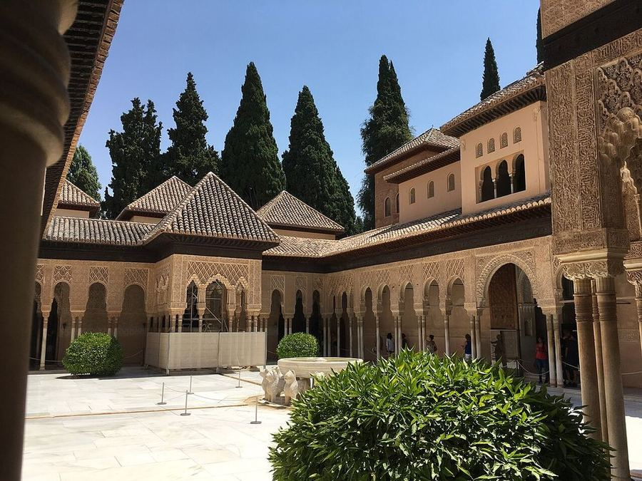
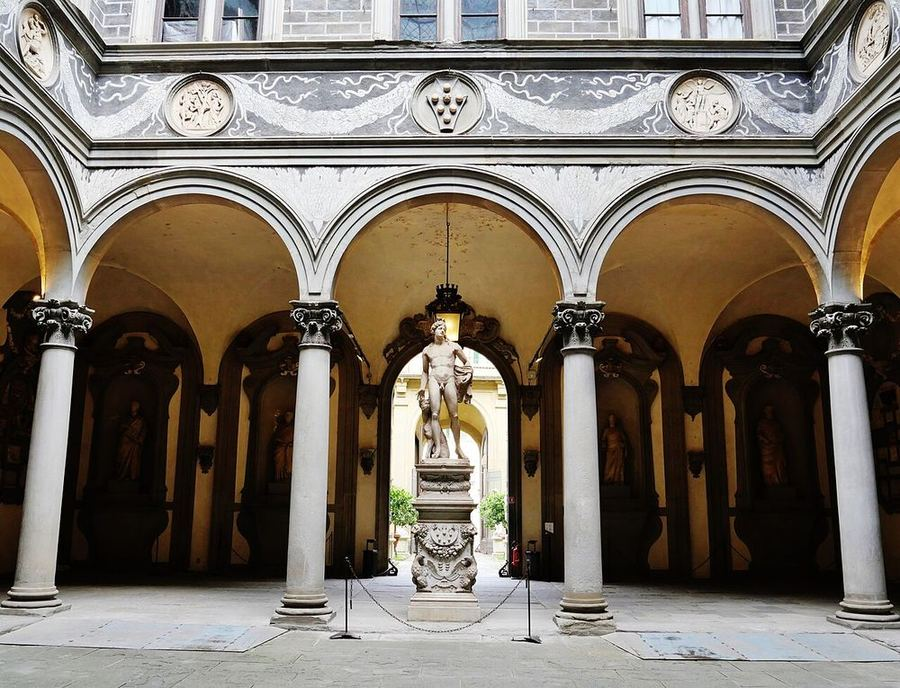
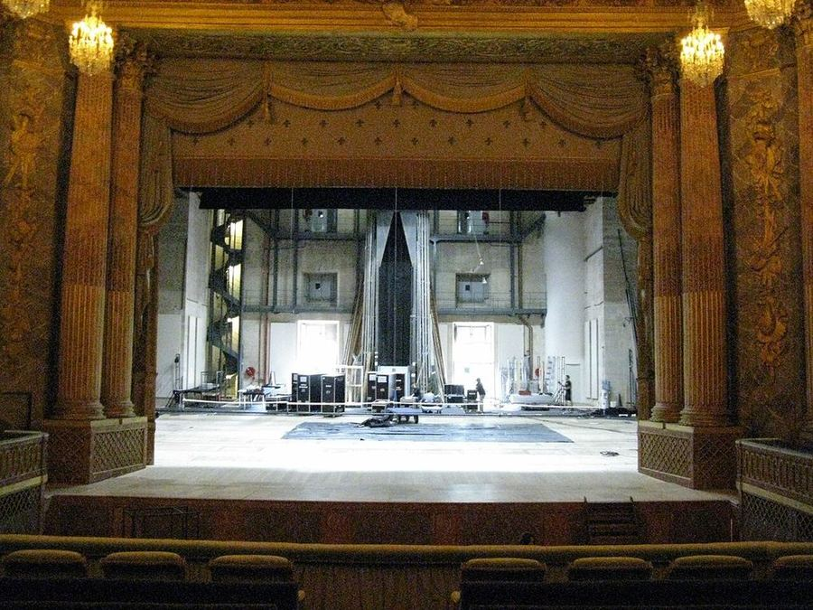
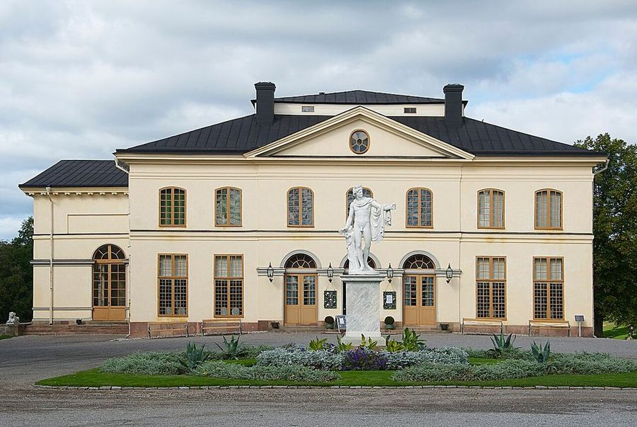
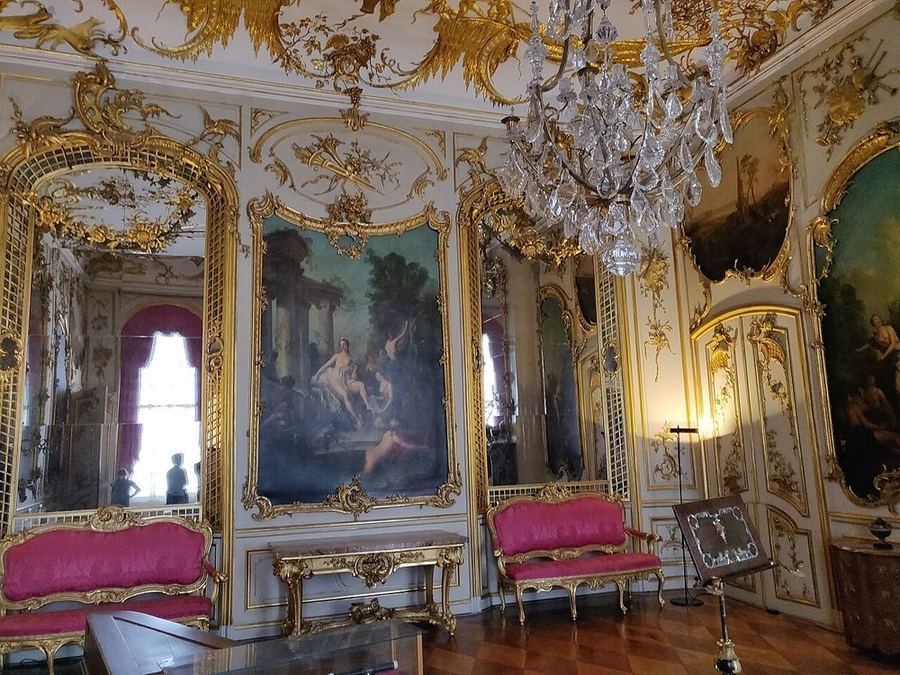
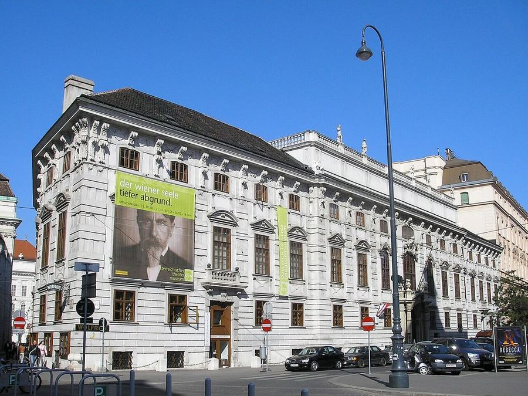

The big idea
European court music moved from a local, intimate art to a cosmopolitan profession. The course sets "early" music, before 1600, against "modern" music. Early music was "a strictly local expression," "softly played in intimate gatherings" by "variously trained amateurs." Modern music is loud, public, international and made by paid professionals.
| Before 1600 |
After 1600 |
| narrow modal melodies |
wide tonal melodies |
| free, complex rhythm |
regular meter |
| several equal voices (polyphony) |
melody with accompaniment |
| loose forms |
clear, periodic forms |
| any instruments |
a standard set of instruments |
The courts
Popes' Palace Avignon
The papal court of the 14th century. Pictured with the Gothic harp and the vielle, the medieval fiddle.
Listen: Messes de Barcelone et d'Apt, Ensemble Gilles Binchois, Dominique Vellard. The Barcelona Mass is thought to come from the papal chapel at Avignon.
Popes' Palace, Avignon. Photo: Jean-Marc Rosier, CC BY-SA 3.0

Alhambra Granada
The Moorish palace of southern Spain. Pictured with the medieval lute and the vihuela.
Listen: Poemas de la Alhambra, Eduardo Paniagua and El Arabí Serghini. Ibn Zamrak's poems from the Alhambra walls, sung to andalusi melodies.No music of the Nasrid court survives. This is a modern setting in the later Moroccan andalusi style.
In the art rooms: Alhambra, Hall of the Two Sisters, the muqarnas dome
Court of the Lions, Alhambra. Photo: Heparina1985, CC BY-SA 4.0

Palazzo Medici-Riccardi Florence
The 15th-century Medici palace, in the city of Italy's artistic renaissance. Lute and viola da gamba.
Listen: Henricus Isaac: Nel tempo di Lorenzo de' Medici, Jordi Savall, Hespèrion XXI. Isaac was Lorenzo de' Medici's household musician; includes Palle, palle, written for the Medici.
Related in the art rooms: Florentine Codex, Book 9: the feather workers. Made in Mexico by Nahua painters and scholars. Owned by the Medici by 1588.
Courtyard, Palazzo Medici-Riccardi. Photo: Zairon, CC BY 4.0
Hampton Court Palace Hampton Court
The English royal palace and chapel. William Byrd (1540–1623) wrote for voices and viol consort.
Listen: Thomas Tallis: Gentleman of the Chapel Royal, Gentlemen of His Majesty's Chapel Royal, Hampton Court Palace, Carl Jackson. Tallis served the Tudor Chapel Royal. Sung by the palace's own choir, recorded in the chapel.
In the art rooms: Portrait of Henry VIII
Chapel Royal, Hampton Court (watercolour by Charles Wild, 1819). Photo: Charles Wild, Royal Collection, Public domain

Château de Versailles Versailles
Built 1660–85 for Louis XIV. Jean-Baptiste Lully (1632–1687) led its music; the palace opera house opened in 1770.
Listen: Lully: Alceste, Les Épopées, Stéphane Fuget. Played for Louis XIV at Versailles in 1674. Recorded at the palace in 2024.
In the art rooms: Louis XIV · Self-Portrait in a Straw Hat
The Opera (1770), Versailles. Photo: GNUtoo, CC BY-SA 3.0

Drottningholm Palace Theatre Drottningholm
The Swedish royal palace and its court theatre (Slottsteater).
Listen: Drottningholmsmusiken, Johan Helmich Roman; Drottningholm Baroque Ensemble. Written for the Swedish royal wedding of 1744.
Drottningholm Palace Theatre. Photo: ArildV, CC BY-SA 3.0

Sanssouci Potsdam
Frederick the Great (1712–86), flutist and patron, and his palace music room.
Listen: Seven Flute Sonatas by King Frederick the Great, Mary Oleskiewicz and ensemble. The king's own sonatas, recorded in the Sanssouci music room.
Sanssouci. Photo: Kurt Kaiser, CC0
Esterházy Palace Eisenstadt
Seat of the Esterházy princes, where Joseph Haydn (1732–1809) served as court composer.
Listen: Haydn: Symphony No. 45, "Farewell", Austro-Hungarian Haydn Orchestra, Ádám Fischer. Written for Prince Esterházy's orchestra in 1772 (at Eszterháza). From a cycle recorded in the Haydn Hall at Eisenstadt.
Haydn Hall, Esterházy Palace. Photo: Zairon, CC BY-SA 3.0

Schönbrunn and the Lobkowitz Palace Vienna
The imperial capital of Mozart (1756–1791) and Beethoven (1770–1827). Prince Lobkowitz hosted Beethoven's music in his Eroica Hall.
Listen: Beethoven: Symphony No. 3, "Eroica", Orchester Wiener Akademie, Martin Haselböck. First played privately in Prince Lobkowitz's hall. Recorded in that hall on period instruments.
Lobkowitz Palace, Vienna. Photo: Gryffindor, CC BY 2.5
Winter Palace St Petersburg
Catherine II (1729–1796) and the Russian court. The Yusupov Palace kept its own music salon.
Listen: Paisiello: Il barbiere di Siviglia, Ádám Fischer. Written for Catherine II's court and first staged in St Petersburg in 1782.
Winter Palace, St Petersburg. Photo: Florstein, CC BY-SA 4.0
Four eras
Middle Ages (13th–14th centuries). Texture moves from one line to several, and rhythm from repeating patterns to measured notation. Guillaume de Machaut (1300–1377) is the central court poet-composer.
Renaissance (15th–16th centuries). Burgundian and Netherlands composers set the style. Four or five imitative voices in a smooth, consonant sound: the Mass and motet for church, the chanson, Lied and madrigal for court. Instruments play in consorts of one family, "whole" (all viols) or "broken" (mixed). The Italian madrigal ran from 1525 to 1620 and ended with Monteverdi at Mantua.
Baroque (1600–1750). The continuo, a bass line with improvised chords, supports everything. Tonality settles around 1680. New forms: opera, oratorio, cantata, concerto, sonata, suite. Lully runs the music of Louis XIV at Versailles.
Enlightenment (1750–1800). Sonata form, the symphony and the string quartet. Equal temperament and the piano. Haydn serves the Esterházy princes; Mozart and Beethoven work in Vienna.
Instruments
- Strings: harp, vielle, lute, vihuela, viols, the violin family
- Winds: recorder, shawm, flute, cornett, trumpet, horn
- Keyboards: organ, clavichord, harpsichord, fortepiano
- Percussion: drums, tambourine, bells, cymbals